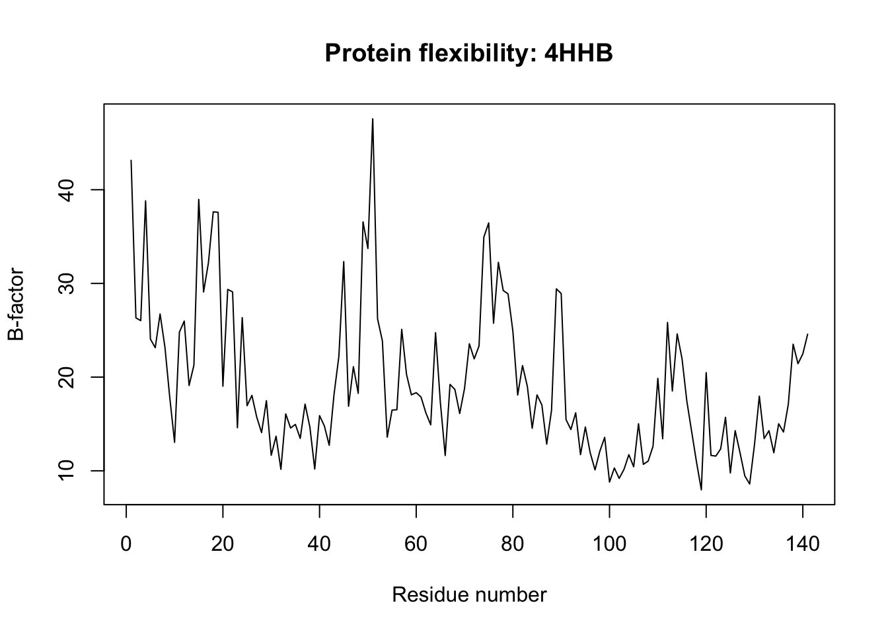

library(bio3d)
Protein_Interx <- function(pdb_id,chain = NULL, atom.type = "CA", plot = TRUE)
{
pdb <- read.pdb(pdb_id)
Asel <- atom.select(pdb,
chain = chain,
elety = atom.type)
# Annotation: Using the function above, our pdb_id input argument is pdb_id and our chain input argument is a specific chain of the protein identified by the id used.
bfactors <- pdb$atom$b[Asel$atom]
residues <- pdb$atom$resno[Asel$atom]
# Annotation: is a vector of B-factors for the chosen atoms. The vector is a numeric one and data is pulled from temperature factor of the table of atoms for the given structure. Residue is another vector of residue numbers that correspond to the B-factors.
result <- data.frame(
residue = residues,
bfactor = bfactors
)
# Annotation: Creates a data frame as an output. We create the two rows for the outputs of residues and bfactors.
if (plot) {
plot(result$residue,
result$bfactor,
type = "l",
xlab = "Residue number",
ylab = "B-factor",
main = paste("Protein flexibility:", pdb_id))
}
return(result)
}
# Annotation: First, the 'if' creates a logical statement and serves to produce a line plot. It will return all the results defined by the code chunk section which created the data frame above. Question 6 HW06 WorkSheet
Q6 - How would you generalize the original code to work with any set of input protein structures?
Use the code to inquire about protein structures.
Protein_Interx(pdb_id = "4HHB", chain = "A") Note: Accessing on-line PDB file
residue bfactor
1 1 43.14
2 2 26.32
3 3 26.03
4 4 38.81
5 5 24.06
6 6 23.14
7 7 26.74
8 8 23.21
9 9 17.84
10 10 13.04
11 11 24.80
12 12 25.98
13 13 19.11
14 14 21.27
15 15 38.97
16 16 29.09
17 17 32.19
18 18 37.64
19 19 37.59
20 20 19.03
21 21 29.36
22 22 29.10
23 23 14.60
24 24 26.35
25 25 16.95
26 26 18.05
27 27 15.73
28 28 14.08
29 29 17.48
30 30 11.66
31 31 13.69
32 32 10.16
33 33 16.07
34 34 14.57
35 35 14.95
36 36 13.46
37 37 17.12
38 38 14.66
39 39 10.19
40 40 15.89
41 41 14.78
42 42 12.73
43 43 18.18
44 44 22.24
45 45 32.33
46 46 16.89
47 47 21.11
48 48 18.27
49 49 36.57
50 50 33.73
51 51 47.57
52 52 26.23
53 53 23.86
54 54 13.59
55 55 16.48
56 56 16.52
57 57 25.10
58 58 20.27
59 59 18.11
60 60 18.34
61 61 17.87
62 62 16.18
63 63 14.91
64 64 24.74
65 65 17.27
66 66 11.63
67 67 19.22
68 68 18.68
69 69 16.12
70 70 18.79
71 71 23.56
72 72 21.95
73 73 23.32
74 74 34.95
75 75 36.46
76 76 25.75
77 77 32.25
78 78 29.25
79 79 28.88
80 80 24.91
81 81 18.09
82 82 21.23
83 83 19.01
84 84 14.54
85 85 18.10
86 86 17.03
87 87 12.85
88 88 16.45
89 89 29.42
90 90 28.92
91 91 15.47
92 92 14.41
93 93 16.19
94 94 11.73
95 95 14.67
96 96 11.93
97 97 10.10
98 98 12.10
99 99 13.57
100 100 8.80
101 101 10.30
102 102 9.19
103 103 10.16
104 104 11.72
105 105 10.43
106 106 15.02
107 107 10.69
108 108 11.04
109 109 12.61
110 110 19.86
111 111 13.42
112 112 25.83
113 113 18.52
114 114 24.61
115 115 21.98
116 116 17.43
117 117 14.17
118 118 10.93
119 119 7.97
120 120 20.48
121 121 11.64
122 122 11.57
123 123 12.34
124 124 15.71
125 125 9.77
126 126 14.28
127 127 11.94
128 128 9.45
129 129 8.59
130 130 12.80
131 131 17.97
132 132 13.44
133 133 14.28
134 134 11.93
135 135 15.02
136 136 14.14
137 137 17.11
138 138 23.51
139 139 21.43
140 140 22.48
141 141 24.58# Annotations: Example uses the Protein Data Bank identifier for human hemoglobin protein structure.